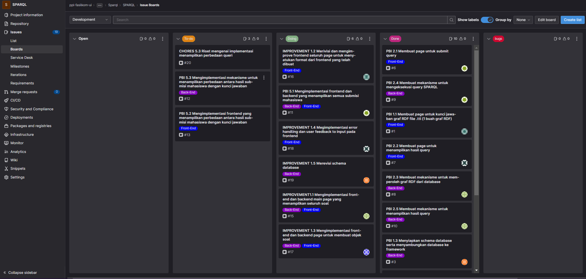

On this section i will try to share more about the real implementation of SCRUM itself from the beginning. On my current project SPARQL me and my team use SCRUM as our process or framework.
Firstly, i will talk about my experience(on this project SPARQL) spesifically when we(me and my SCRUM team) arranged the product backlog. As we know, on this step we have to identify what are the user needs and translate it into the backlog. On this steps, we try to understand what are the user needs and discuss it in order to finish the backlog. There are some differences in understanding among the SCRUM team, but we managed to put it together and reach the point where we had the same thoughts about what are the user needs and then translate it into the product backlog.
Secondly, i will share my experience about the sprint planning steps. As we know, we need to do the sprint planning before actually do the sprint itself. On this steps, actually nothing really different from the actual definition of sprint planning itself. We as a SCRUM team made a list and discuss it with the user about the priority of the feature. Yes, maybe there is some argument about how many features that will be implemented on this sprint, but with the help of poker planning we can make some sort of difficulty level to those features and be more convidence about what we can implement on this sprint.
Thirdly, yes we did the sprint planning and get the sprint backlog as a result. The sprint backlog itself will actualy be our guide about this sprint. Then, we made the gitlab board after we discuss about what are the "work" that can be done. In this case, we look intu the product backlog and split the task into smaller tasks. Then, after that we also made a gitlab board to keep track of our work on this sprint. We made some sections such as To-do,Done,Bugs, etc.
Next, the sprint implementation, on this step me and my team actually try to work with how the SCRUM work. Let me explain, okay on SCRUM there is no such thing as assignments. What i mean by that is you will take the subtask individually that you already discussed and set on the planning step. So, for example there are a couple tasks on the gitlab board that have not been taken yet, the dev team will take the task individually without any assignment. For example i want to take the frontend work because i see myself as a capable person for doing that task and it also work for the other dev team.
Next, the sprint review, on this step basically we will present our project that we have been working on during the sprint to the user or client. On this step, we have to present the "launch" ready product to the client. So we have to make sure that during the sprint we work our best to finish and giving the client the best version of the product. Also on this step, we will get maybe some advice or maybe even a change of plan related to the product itself. We have to take not about those advice and changes and take it into consideration on the next sprint planning.
Next, the sprint retrospective, on this step we as a SCRUM team will discuss about basically what went right on the sprint and giving some apreciation. Also we discuss about what went wrong and giving some recommendation on how to fix it. We have to also take note about the result of the sprint retrospective in order to improve our team quality and learn from the current sprint and try to perform better at the next sprint. We can use the recommendation in order to solve the problem and improving our performance.
Let us get into the details. On this paprt i will share about the details or a lesson that i learn about SCRUM from all of those processes that i did.
There are some notes that i also learn during the process.
First, it will be better for us to take the task based on the priority that has been set on the planning by the product owner. So, for example the task for login is the most important one, simply the dev team should take the task that correlated with the login functionality itself before taking the other task. Maybe there will be one dev team that take the frontend part and the other one taking the backend part, etc. As long as we still have the or some task that correlated to the login functionality iteself, it will be better for us to take those task first before moving on to the other functionality.

Next, we also have to be ready for taking the task that maybe not the task that we "good" at. For example, im more confident for doing the frontend task but whats left on the board is only the backend task. In this case, i have to take the task and work my best to try to finish the task. If at the end i cant finish the task, i have to let go of the task and let the other dev team to work on that. But the point is, we have to be ready for taking whatever the task is as a dev team at SCRUM.
Next, daily meeting is very important. why so? okay, from my personal experience daily meet is a very important because we will get the information about what is done and what else have to be done. Yes, we can see this on the boards to track the sprint process. But on the other sides board doesnt give you like the actual knowledge about the process. For example, when one of the dev team suddenly cant finish their task on the daily meet the information will be shared and that person will drop the task and try to finish the other task. Also we can build the sense of belonging among the team.
Next, story point on sprint planning. Actually this is on of the details that i think very interesting. why so? because in order to give the task a story point or "weight" we as a SCRUM team will give our personal oppinion about how hard we think the task is. In my team case, we use the finger method. How it works is basically we raise our fingers according to the difficulty of the task at the same time. So, for example i think the task is very hard then i will raise 5 of my fingers. On the other hand, maybe on of my team think it is quite easy so they can raise only 1 finger. So the story pint or the "weight" will be calculated by the majority of the vote. This is very interesting because if the story point is very big(very hard) so we can move it so that we will work that task later on the sprint. This is one of the way so that the sprint will keep "productive" without the "hard" task slowing the process.
Next, giving user "functionality". Actually the way the sprint work is taking the most important task(based on funcionality) to the sprint first. For example, we have two task one is a login task and the other is an improvement of the UI. In this case, we will have to take the login task first into the sprint before we take the other one. Why so? Because the login task will give the user new functionality that can be used. On the other side, the improvement is not going to give the user new functionality.
Last, merge request. Okay actually the merge request is one of the important note that i also learn after being a SCRUM dev team for a couple sprint. The message and detail about the merge request is very important. Why? Because its on of the way that the other member of the team could understand about what are you requesting, what have you done on the code, what are the impact,etc. So the other member can also consider about accepting the merge request or maybe giving you a feedback about the code. I found out this to be very important because as a dev team i will have to know what are my team have done in order to accept the merge request itself